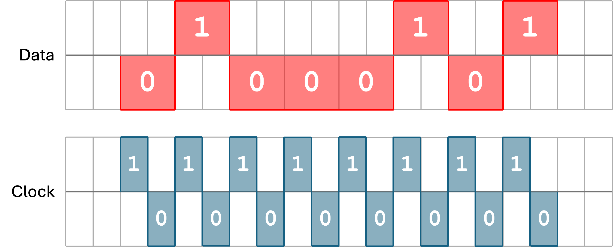
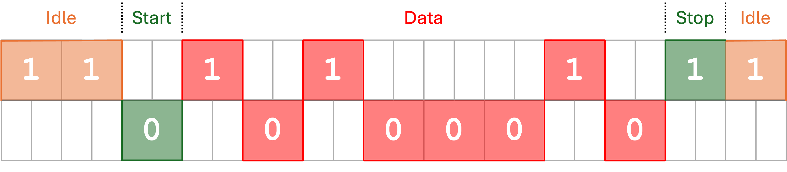

GCSE Link: None
For two devices to communicate, they must be synchronised in some way, otherwise the receiving device will not know when to read the data.
 In synchronous communications, a shared clock is used to coordinate the transmission.
In synchronous communications, a shared clock is used to coordinate the transmission.
When the clock is set to 1, the receiving device reads the signal on the data stream.
Diagram 1 shows an example of synchronous communication.
 Diagram 1
Diagram 1

 Asynchronous communications do not use a shared clock to coordinate the transmission.
Asynchronous communications do not use a shared clock to coordinate the transmission.
Instead, the data stream is set to 1 while idle. The first bit of a communication is 0, signalling to the receiving device that a communication is about to start. Then, one byte of data is sent (along with an optional parity bit), followed by a stop bit, which is 1. The signal is then kept at 1 (idle) until the next communication starts.
Diagram 2 shows an example of asynchronous communication.
 Diagram 2
Diagram 2

 The overhead of a communication is the amount of additional bits sent apart from the data, as a percentage of the size of the data.
The overhead of a communication is the amount of additional bits sent apart from the data, as a percentage of the size of the data.
For example, the overhead of the communication in Diagram 2 is 2 / 8 = 25%, because
1 start bit and 1 stop bit was required (totalling 2 additional bits), and 8 bits of data
were sent.
 What is the overhead in synchronous communications?
What is the overhead in synchronous communications?
Zero, because nothing but the data is sent.